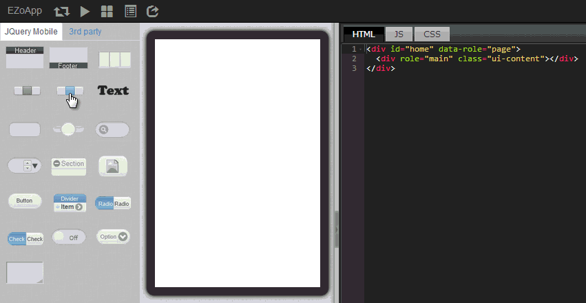

Google Map is the most user-friendly open map information platform in the world today. It is also the most widely used map at present. You can see Google Map in web pages, navigation, Android, iOS and all kinds of other devices.
Unfortunately, for those who do not know how to write programs, asking them to add a map in their web pages is just like killing them. However, if they use EZoApp, then their lives are saved! (Chill XD) There is a gmap component among EZoApp's 3rd party components that can be used by everyone to create a map. Using EZo's R&D team's syntax, users can write just 3 lines and less than 100 words of code, and then be able to put their feet up while admiring the map they have created with great satisfaction. This feeling is just unimaginably joyful! Although EZoApp is very easy to use, however, before you start to create a map you still need to have some fundamental understanding in HTML and CSS. After all, you will still need some related basic knowledge in laying out a page.
Next, let us quickly introduce the map program that can be written in the shortest amount of time! Open EZoApp! Let's go!
Link of example:
Integrating JavaScript in your app - Google Map app

navbar is one of the commonly used components. As its name suggests, it is a navigation tab component. Its program code is also very simple. There will be as many <li><a></a></li>，as the number of buttons. If you need multiple buttons, you can add additional ones in the code and the buttons will be created automatically.
gmap component is a component developed by the EZo R&D team. It allows users to easily and quickly create maps. Its method of use is also quite simple-- in the component panel, choose 3rd party component, then select gmap component, drag it onto the screen, and edit its length and width. But, gmap component has more adjustable features than just length and width. You can also change the value of zoom to control the size of map-- the larger the number, the larger the map. You can also specify the location in the map by using the address. Isn't this very handy?！
<div is="gmap" style="width:100%;height:200px;" zoom="12" address="Qianzhen, TW"></div>

Do you think that the button will be linked with the map by just placing the components? Honestly, it might not be as easy as that. However, EZoApp has greatly lowered the threshold for us. Just change the tab of the navbar to the name of a city and paste the following code in the JS tab, then the map will jump to the location centered in the city that we had specified!
$(document).on('pageinit', function () {
$('#map_btn').on('click', function (e) {
var addr = $(e.target).text();
$('#map').gk('address', addr);
});
});
Nevertheless, do not forget to add id="map_btn" in navbar, and add id="map" in the map.
<div data-role="navbar" id="map_btn">
<div is="gmap" id="map" style="width:100%;height:450px;" zoom="15" address="Qianzhen, TW"></div>
That's all the code you need. Isn't it very easy? After you are done editing, click on the preview button on the top, then you can test to see how the map works!

Link of example:
Integrating JavaScript in your app - Google Map app